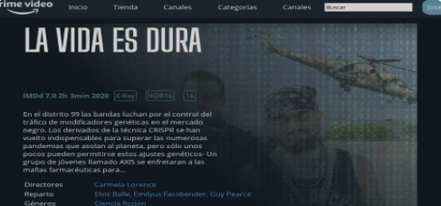

PrimeVideo
Projecte creat l'octubre de 2023 com a part de LLM per realitzar una prova d'autoevaluació, on es demanaba crear una copia de la web de la pel·licula "LA VIDA ES DURA" de PrimeVideo
Projecte de Portafolis, 1er GS ASIX
Projecte creat l'octubre de 2023 com a part de LLM per realitzar una prova d'autoevaluació, on es demanaba crear una copia de la web de la pel·licula "LA VIDA ES DURA" de PrimeVideo

Projecte creat el gener de 2023, joc de rol amb augment d'estadìstiques i pressa de desicions, forma part d'una tasca opcional de AW on es demanaba crear un joc de rol aplicant JavaScript

Projecte creat el desembre de 2022, com a part d'un exercici d'AW on es demanaba que copiesim una pàgina web en concret, en el meu cas em va tocar copiar la pàgina del diari del País (versió antiga)
Aquest projecte forma part dels exercicis opcionals de LLM (ASIX) 2023, on es demanaba copia el disseny d'un newsletter
Aquest projecte forma part dels exercicis opcionals de LLM (ASIX) 2023, on es demanaba copia el disseny d'un newsletter en aquest cas d'Ebay
Aquest projecte forma part dels exercicis opcionals de LLM (ASIX) 2023, on es demanaba copia el disseny de la pàgina de presentació d'una pel·lícula